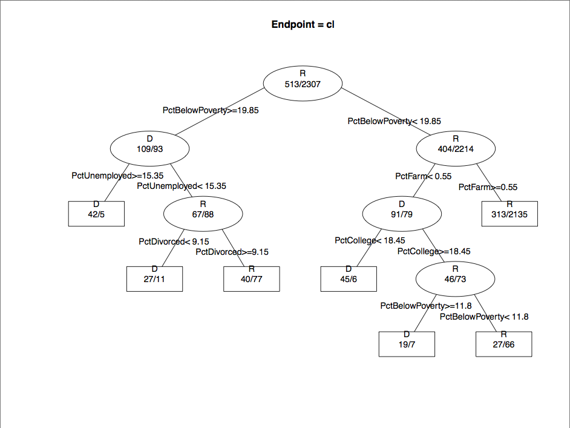
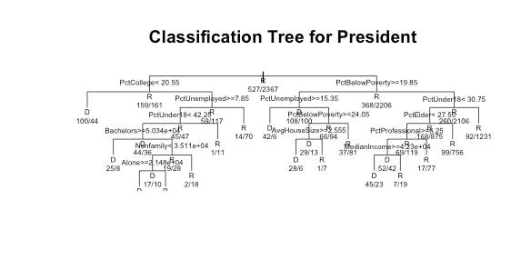
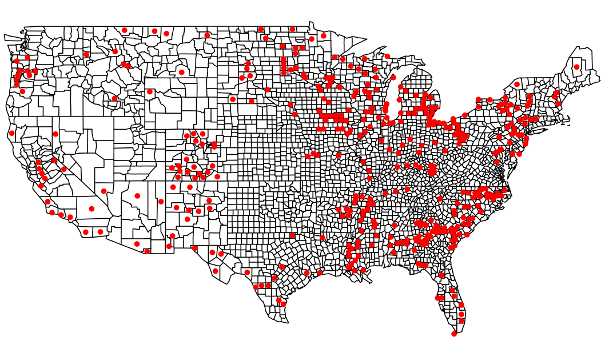
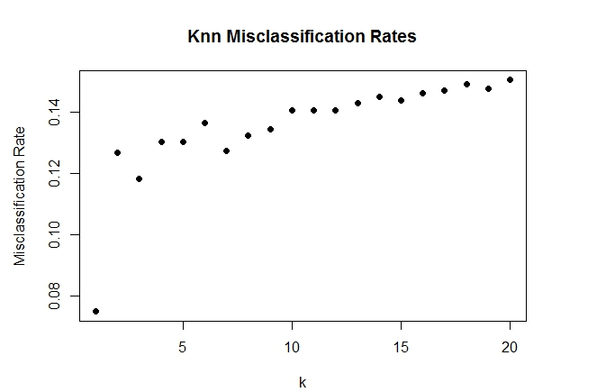
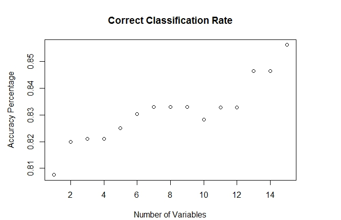
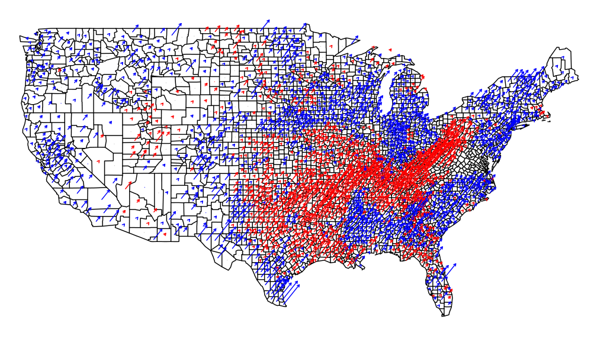

Jason Zhang, Jeremy Young, Michael Tran, Patrick Lin
The original 10 variables we trained and tested our predictors on were:
"Percent; HOUSEHOLDS BY TYPE - Households with one or more people 65 years and over",
"Estimate; HOUSEHOLDS BY TYPE - Average family size",
"Percent; MARITAL STATUS - Divorced",
"Percent; EDUCATIONAL ATTAINMENT - Some college",
"Percent; EMPLOYMENT STATUS - Percent Unemployed",
"Percent; HOUSEHOLDS BY TYPE - Households with one or more people under 18 years",
"Percent; INDUSTRY - Agriculture",
"Percent; INDUSTRY - Professional",
"Estimate; INCOME AND BENEFITS (IN 2010 INFLATION-ADJUSTED DOLLARS) - Median household income (dollars)",
"Percent; PERCENTAGE OF FAMILIES AND PEOPLE WHOSE INCOME IN THE PAST 12 MONTHS IS BELOW THE POVERTY LEVEL - All families",
These were all chosen somewhat arbitrarily as conditions we thought would affect election rates or were interesting to observe. We later added five more variables to test our recursive partitioning model:
"Estimate; HOUSEHOLDS BY TYPE - Nonfamily households",
"Estimate; HOUSEHOLDS BY TYPE - Average household size",
"Estimate; MARITAL STATUS - Never married",
"Estimate; HOUSEHOLDS BY TYPE - Nonfamily households - Householder living alone",
"Estimate; HOUSEHOLDS BY TYPE - Family households (families) - Female householder"
3A Plot

Classification tree built by post() from the RPart library with the original 10 variables.

Classification tree built by RPart() with all 15 variables. The very bottom of the plot was generated slightly cropped.
4A Plot 1

Map of the 294 counties that were incorrectly predicted by both our KNN and RPart predictors on 10 variables. The KNN predictor alone incorrectly predicted the outcome for 390 counties while the RPart got 521 wrong, so there was substantial overlap in incorrect predictions. These could possibly be counties that voted differently enough in the 2004 and 2012 elections for both our predictors to be incorrect, or were affected more by other variables that we did not account for.
4A Plot 2

KNN error rates on the original 10 variables for various values of k.
4A Plot 3

RPart correct classification rate with 1, 2, 3... up to 15 variables. Variables were included in order of importance from analyzing the 2004 data given by summary() in the RPart library. This order however does not apply perfectly to the 2012 predictions, however, otherwise the greatest increases in classification rate would be seen with the first few variables. In fact, the classification rate goes down on the tenth variable, which corresponds to "Percent; INDUSTRY - Agriculture". Even so, the general trend is that our predictor is more accurate when given more variables.
4B Fancy Map

Party vote shift from '04 to '12 election. Arrows signify an increase in voting percentage from '04 to '12, with red corresponding to Republicans and blue to Democrats. The biggest increases are in the South, where we see the Democrats gaining in the Southeastern states and the Republicans winning more voters in the region around the Appalachian states, AR, and eastern TX.